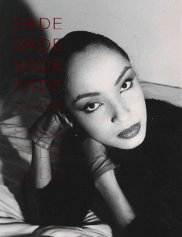
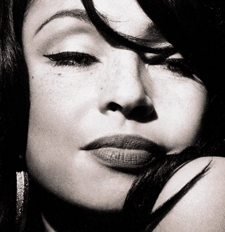
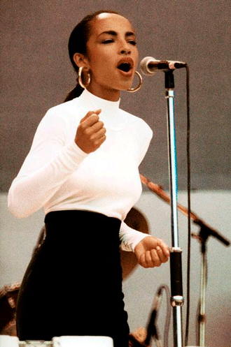
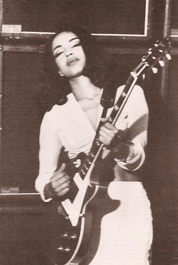

Nacida el 16 de enero de 1959 en Ibadan, Nigeria, Sade, hija de padre nigeriano y madre inglesa,
se trasladó a Inglaterra a los cuatro años, creciendo en la localidad de Essex.
Estudió diseño de moda en Saint Martin's School of Art (Escuela de arte) en Londres, pero pronto su talento y su voz
conocida como el registro vocal femenino más bajo, la llevó a los escenarios.
Estilo Musical
Sade hace una música que combina varios estilos suaves y elegantes. su sonido mezcla principalmente el Soul que es un estilo de música
que nació en la comunidad afroamericana y tiene mucha carga emocional, con letras que hablan de amor, dolor y esperanza. R&B contemporáneo
este es un género que viene del soul pero con una base más moderna y rítmica, tiene melodías suaves, ritmos lentos
o medios, y letras que suelen hablar del amor, las relaciones o los sentimientos. El Jazz el cual es un género con mucha improvisación, y
armonías sofisticadas y uso de instrumentos como saxofón, piano o contrabajo. Y por ultimo el Sophisti-pop que es un subgénero del pop,
que apareció en los años 80, caracterizado por un sonido pulido, suave y adulto. Tambien utiliza sentitizadores e instrumentos reales.


¿Qué expresa su musica?
La música de Sade expresa emociones profundas desde un lugar íntimo, sereno y maduro, a través de su voz y sus letras,
transmite sensaciones de amor, deseo, tristeza, nostalgia y fortaleza emocional. Sus canciones hablan de el que enamora, el que duele,
el que se pierde y el que permanece. También aborda el dolor y la pérdida con una elegancia única, sin dramatismos.
La sensualidad en su música es sutil, sugerente, envolvente, sin necesidad de ser explícita, además, sus letras invitan a la reflexión,
revelando una mirada introspectiva y madura sobre las emociones.
Letras destacadas
“Like the scar of age,
written all over my face, war is still raging inside of me, I still feel the chill,
as i reveal my shame to you, I wear it like a tattoo...”
Como la cicatriz de la edad, escrita en mi cara,
la guerra sigue rugiendo en mi interior, todavía siento la tranquilidad, mientras te revelo
mi vergüenza, la llevo como un tatuaje...
Like a tattoo
“There must have been an angel by my side, something
heavenly led me to you, look at the sky, is the color of love...”
“Debió haber un ángel a mi lado, algo celestial me guió
hacia ti, mira el cielo, es el color del amor...”
Kiss of life
“I gave you all the love i got, i gave you more that i can give
gave you love, i gave all that i have inside, and you took my love...”
Te di todo el amor que tengo, te di más de lo que puedo dar, darte amor..
te di todo lo que llevo dentro, y te llevaste mi amor...
No ordinary love
Su vibra y atmósfera
Su propuesta sonora genera una atmósfera de serenidad y contemplación, invitando al oyente a una experiencia
introspectiva y sensorial, la calma es un rasgo predominante en su obra, cada composición parece cuidadosamente
construida para generar una sensación de recogimiento y pausa.
Su estilo de vestir
El estilo de vestir de Sadese distingue por su sobriedad, elegancia y coherencia estética
con el universo musical que representa. A lo largo de su trayectoria, ha construido una imagen visual minimalista
y refinada, basada en prendas de corte clásico y líneas limpias. Su vestimenta evita los excesos y se apoya en una
paleta de colores neutros, como el blanco, el negro, el azul marino y el beige, aportando una presencia serena y
atemporal. Entre sus elecciones más representativas se encuentran las camisas blancas de inspiración masculina,
los pantalones de tiro alto, los trajes sastre, los abrigos largos y las prendas de denim. Estos elementos
se combinan con accesorios discretos pero icónicos, como aros dorados grandes, moños recogidos y labios en tonos
intensos. Su estilo proyecta una sensualidad contenida, una feminidad fuerte y elegante.


Impacto cultural
Sade tuvo un impacto cultural profundo y duradero en varios niveles, rompió con los estereotipos de las divas del pop de los 80,
y se convirtió en un ícono de estilo atemporal. Su estilo único, que fusiona soul, jazz, R&B contemporáneo y pop ambiental,
ha influido en artistas como Drake, Beyoncé, D’Angelo, Aaliyah, The Weeknd, Frank Ocean y SZA, muchos la citan como una pionera del "quiet storm"
suave y sensual. Es un Ícono del anti-show en una industria que premia la sobreexposición, Sade eligió el silencio. Ha lanzado discos con
largos intervalos (hasta 10 años) y rara vez da entrevistas. Siendo vista como una artista que antepone el arte a la fama.
Por ultimo ella es un Símbolo global afrodescendiente por lo cual se convirtió en una figura cultural que desafió categorías. Su presencia
en la música internacional mostró que lo sofisticado, lo elegante y lo introspectivo también puede venir de una mujer afroamericana en una industria
muchas veces superficial y estandarizada.
"Su música trascendió géneros, razas y generaciones, siendo escuchada tanto en clubes de jazz como en radios pop".
Su carrera musical
Comenzo en el Reino Unido a principios de los años 80, cuando Sade, se une como vocalista a un grupo que más
tarde adoptaría su nombre. Junto con sus compañeros de banda Stuart Matthewman, Andrew Hale y Paul Denman forman
una agrupación. Su álbum debut, Diamond Life (1984), fue un éxito inmediato a nivel internacional.
Con el paso de los años, Sade consolidó una carrera basada en la calidad artística más que en la exposición constante. Cada uno de sus discos fue
recibido con entusiasmo tanto por la crítica como por el público, incluyendo los albumes Promise (1985), Stronger Than Pride (1988), Love Deluxe (1992),
Lovers Rock (2000) y Soldier of Love (2010).